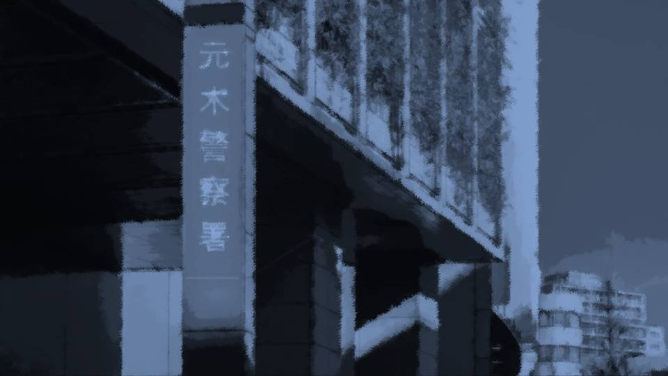
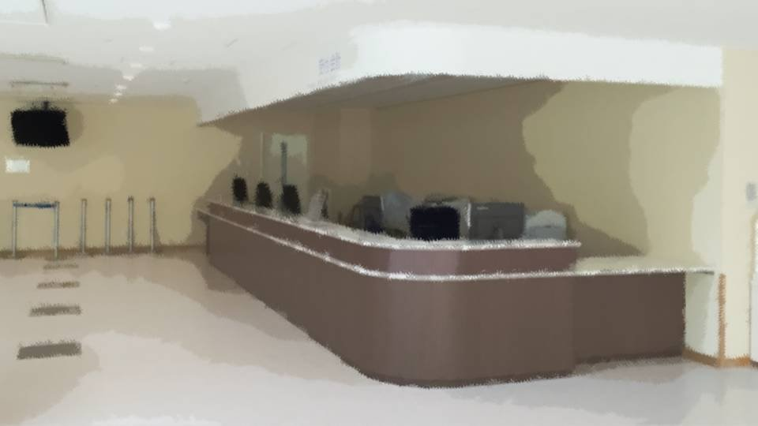
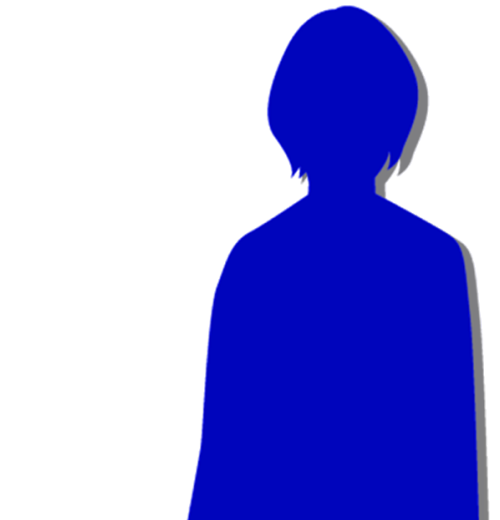

Infection
It happened in just an instant.
Kogori-senpai's head, as if carried off by a strong wind, disappeared.
Kogori-senpai's head, as if carried off by a strong wind, disappeared.
At the same time, something like blood stuck to me in a thick smear.
Something like blood, or rather, real blood?
Did the person from before do it?
No way... they were at least 100 meters away; there's no way they could have gotten close in that one instant.
Something like blood, or rather, real blood?
Did the person from before do it?
No way... they were at least 100 meters away; there's no way they could have gotten close in that one instant.

The police station came into view. Almost there... almost there.
Still carrying a big backpack that was out of proportion to my size, I ran into the police station.
Still carrying a big backpack that was out of proportion to my size, I ran into the police station.

"U-um, I'm here for Senpai...! Natsumi Kogori-san, I came to pick her up!"
The moment I reached the front desk, I shouted, without even looking at the person's face.
The person at the front desk seemed a little surprised, but
"Huh...? Oh, hold on a moment."
The moment I reached the front desk, I shouted, without even looking at the person's face.
The person at the front desk seemed a little surprised, but
"Huh...? Oh, hold on a moment."
"Ah, hello? Someone's here to pick up Kogori-san? No, some short girl.
Yeah... okay, okay."
With that, and setting down the receiver,
"She'll be right out, so wait a moment, okay?"
Senpai was being called for me, it seemed.
With that, and setting down the receiver,
"She'll be right out, so wait a moment, okay?"
Senpai was being called for me, it seemed.
"Oh, Goto..."
From the far end of the corridor, Kogori-senpai appeared.
She looked a little haggard, too.
"Goto, you really came."
"I'm sorry, Senpai. When you're going through such a hard time..."
"No, being with someone takes my mind off things for me too."
From the far end of the corridor, Kogori-senpai appeared.
She looked a little haggard, too.
"Goto, you really came."
"I'm sorry, Senpai. When you're going through such a hard time..."
"No, being with someone takes my mind off things for me too."
Senpai's face showed more fatigue than I had expected.
Her dad had been murdered, after all, and on top of that, she had been questioned by the police for hours.
Even before that, it's the season when she suffers from April sickness, a rare condition. [TN: A pun on gogatsu-byo, 'May sickness,' Japan's term for the May blues.]
Then, Senpai turned her eyes to my backpack.
Her dad had been murdered, after all, and on top of that, she had been questioned by the police for hours.
Even before that, it's the season when she suffers from April sickness, a rare condition. [TN: A pun on gogatsu-byo, 'May sickness,' Japan's term for the May blues.]
Then, Senpai turned her eyes to my backpack.
"What's all this, Goto? That big bag..."
"Oh, no, it's just stuff for staying over..."
"Maybe it's packed with self-defense items or something? You're being a scaredy-cat today, Goto, after all."
Really, why does she have to put that uncalled-for intuition to work every single time...!
"Oh, no, it's just stuff for staying over..."
"Maybe it's packed with self-defense items or something? You're being a scaredy-cat today, Goto, after all."
Really, why does she have to put that uncalled-for intuition to work every single time...!
"Th-that's not it! You see, Senpai, I figured there'd be the funeral and all! My mom sent me with all sorts of things."
"Hmm? But Goto, weren't your parents going to a class reunion today? You said so the other day, didn't you?"
"Hmm? But Goto, weren't your parents going to a class reunion today? You said so the other day, didn't you?"
"Really! What does it matter!!"
At that, the staff behind the counter looked over at us suspiciously.
At that, the staff behind the counter looked over at us suspiciously.
"Oh... I'm... sorry."
I looked down and quickly pulled Senpai by the hand.
I couldn't look at Senpai's face.
I looked down and quickly pulled Senpai by the hand.
I couldn't look at Senpai's face.
When we went outside together, the chilly air wrapped around my body.
"Senpai, I'm sorry... I..."
With my back still turned to Senpai, I apologized.
"Senpai, I'm sorry... I..."
With my back still turned to Senpai, I apologized.
"I'm the one who should be sorry..."
Even though she had done nothing wrong, Senpai apologized to me. It was an awfully heavy atmosphere.
But, I don't want to lose much time here. Better get moving, fast.
Even though she had done nothing wrong, Senpai apologized to me. It was an awfully heavy atmosphere.
But, I don't want to lose much time here. Better get moving, fast.
Senpai had come here in a police car, so she had no bicycle.
And with this luggage, we couldn't ride double either.
We'll just have to walk, then.
And with this luggage, we couldn't ride double either.
We'll just have to walk, then.
Senpai and I walked side by side along the road lit by the moon.
We didn't meet each other's eyes, and we didn't talk.
Along the windless avenue of cherry trees, petals were dancing, fluttering down.
We didn't meet each other's eyes, and we didn't talk.
Along the windless avenue of cherry trees, petals were dancing, fluttering down.
"Hey, Goto..."
The one who broke the silence first was Senpai.
"What is it?"
"There's something you want to say to me, right? Is it something hard to say?"
She was right on target. Did it show on my face, or was it Senpai's intuition...
The one who broke the silence first was Senpai.
"What is it?"
"There's something you want to say to me, right? Is it something hard to say?"
She was right on target. Did it show on my face, or was it Senpai's intuition...
That's it! I'd forgotten something important! I have to have her send Niimura-senpai a false message!
But, there's no way I can tell her the reason.
Will Kogori-senpai do as I ask without even asking why...
But, there's no way I can tell her the reason.
Will Kogori-senpai do as I ask without even asking why...
"Senpai... I'll explain the situation later, so please, without saying anything, just do as I ask."
"Yeah, Goto, I'll follow you."
Senpai turned her face just slightly toward me.
In turn, I looked into Senpai's eyes.
"Yeah, Goto, I'll follow you."
Senpai turned her face just slightly toward me.
In turn, I looked into Senpai's eyes.
"Right away, please call Niimura-senpai and tell her, 'I'll be late today, so I'm staying at the police station.'"
"Huh...?"
I stared hard at Senpai, pleading with my eyes too.
And then Senpai immediately took out her phone,
"Huh...?"
I stared hard at Senpai, pleading with my eyes too.
And then Senpai immediately took out her phone,
"Hello, Haruka? Yeah, that's right. It looks like it's going to take a long time.
Yeah. I'm going to be staying the night at the police station. Yeah... Heh, I'm fine."
I let out a long breath.
Good. With this, at least, Niimura-senpai probably won't suddenly attack.
I let out a long breath.
Good. With this, at least, Niimura-senpai probably won't suddenly attack.
Before long, Senpai hung up.
"Is this all right?"
Senpai smiled and looked at me.
"Yes, perfect."
I smiled too, and turned my face to Senpai.
"Is this all right?"
Senpai smiled and looked at me.
"Yes, perfect."
I smiled too, and turned my face to Senpai.
"Goto, thank you for worrying about me. When you came to get me today, too, it wasn't because you were scared, was it?"
Senpai didn't ask why I'd had her make a fake call.
She was putting all her trust in me.
I was happy that Senpai trusted me.
Senpai didn't ask why I'd had her make a fake call.
She was putting all her trust in me.
I was happy that Senpai trusted me.
"Goto! I'll carry this!"
With that, she snatched my backpack from me.
"Pushing a bike with this bag looks tough! I'll help too."
Senpai slung the big backpack onto her back.
With that, she snatched my backpack from me.
"Pushing a bike with this bag looks tough! I'll help too."
Senpai slung the big backpack onto her back.
"Whoa! Heavy!"
Probably, all sorts of metal things were pressing against her back, and normally she'd have found that suspicious.
But Senpai said nothing.
Maybe it was because I'd yelled earlier, but more than that, Senpai had probably figured, somehow, that they were things I needed.
Probably, all sorts of metal things were pressing against her back, and normally she'd have found that suspicious.
But Senpai said nothing.
Maybe it was because I'd yelled earlier, but more than that, Senpai had probably figured, somehow, that they were things I needed.
"Hey, Goto... I do wonder, about why you had me make that call just now. But, there's a reason you just can't tell me, isn't there?"
"............"
"But, I trust you too, Goto, but I trust Haruka too."
No words came out of me.
I want to trust Niimura-senpai too. I want all of it to be just my imagination.
"............"
"But, I trust you too, Goto, but I trust Haruka too."
No words came out of me.
I want to trust Niimura-senpai too. I want all of it to be just my imagination.
"My dad got killed by somebody, but...
But, I really can't believe Haruka did it. After all, there's no way Haruka could do something that elaborate on her own."
"That's... true..."
Thinking about it calmly, that part really does bother me quite a bit.
I can't imagine a high-school girl committing a crime like that alone.
"That's... true..."
Thinking about it calmly, that part really does bother me quite a bit.
I can't imagine a high-school girl committing a crime like that alone.
"Besides, Haruka's dad has gone overseas too. How lonely it is without your dad around, Haruka should understand that well too."
I see... Senpai still doesn't know...
No, this is only my guess too, but if that Eiichiro Niimura-san is Niimura-senpai's father, then Niimura-senpai has been lying all along.
I see... Senpai still doesn't know...
No, this is only my guess too, but if that Eiichiro Niimura-san is Niimura-senpai's father, then Niimura-senpai has been lying all along.
"Huh...?"
I stopped walking.
"What's wrong?"
This is strange...! That's impossible...!
That Kogori-senpai wouldn't know about the death of Niimura-senpai's father...!
No, it isn't certain yet that Niimura-senpai's father = Eiichiro-san, but...
I stopped walking.
"What's wrong?"
This is strange...! That's impossible...!
That Kogori-senpai wouldn't know about the death of Niimura-senpai's father...!
No, it isn't certain yet that Niimura-senpai's father = Eiichiro-san, but...
"Senpai! When was the last time you met Niimura-senpai's father!?"
"Huh...? Um... I think it was before Haruka moved away... Back around kindergarten."
"Have you seen a photo!? A recent photo of Niimura-senpai's father!"
"I haven't, but..."
"Huh...? Um... I think it was before Haruka moved away... Back around kindergarten."
"Have you seen a photo!? A recent photo of Niimura-senpai's father!"
"I haven't, but..."
It had been bothering me all along.
In the wind that had suddenly sprung up, I traced back through my memory.
In the wind that had suddenly sprung up, I traced back through my memory.
"Yeah, I lived here in Motoki-cho till kindergarten, but my dad's job had us move.
3 years ago my dad finally got transferred overseas, so it turned into a posting away from the family.
Just me and Mom came back to this town."

"When it was decided 3 years ago that we'd come back to Motoki-cho, Natsumi told me, 'The place next door is empty.' I begged Mom, and we moved into the place we're in now."
That's absurd...!
Could it be that, of Kogori-senpai's allies... there wasn't a single one...!?
Could it be that, of Kogori-senpai's allies... there wasn't a single one...!?
video: 桜.wmv
Suddenly, Senpai grabbed my shoulder.
"Goto... let's run, quick!"
"Huh...?"
But Senpai wasn't looking at me.
She seemed to be looking at someone standing far away.
It was too far to make out the figure clearly, but...
"Goto... let's run, quick!"
"Huh...?"
But Senpai wasn't looking at me.
She seemed to be looking at someone standing far away.
It was too far to make out the figure clearly, but...
video: 桜.wmv
"Goto...
It's... no use..."
video: 桜.wmv
Run...!
It's dangerous here...! Danger is closing in!
The cherry trees' warning...! So that really should never have been used! Whoever takes the power dies in April
It's the cherry trees' curse Get away from the cherry trees! No, that was an accident! I won't hand Haruka over Longed for a family No escaping the shinigami
The witch's curse I killed six people
No, the ones who killed were us
video: 桜.wmv
What is this... these voices...
video: 桜.wmv
Wearing the Noh mask This is the custom of the Arata settlement Drugs...?
It's all right just to dream, isn't it? Who saved me? I don't believe that...
The witch summons the shinigami Save Haruka
Akane... Seeking beauty even in the look of a corpse
Kogori-senpai's... same as her intuition...?
Why do I have the same intuition as Kogori-senpai, too...?
Read ✓ Next in this arc →